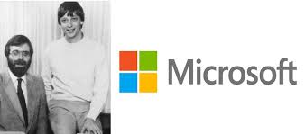
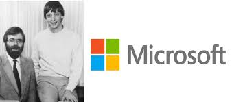

Microsoft Corporation is a company that makes computer software and video games. Bill Gates and Paul Allen founded the company in 1975.[3] Microsoft makes Microsoft Windows, Microsoft Office (including Microsoft Word), Edge, MSN and Xbox, among others. Most Microsoft programs cannot be downloaded for free - people have to buy them in a shop or online. Some products (like the Windows operating system) are often already installed when people buy a new computer.
 

Microsoft Windows is an operating system, which means that it is the basic software that makes people's computers work and lets other programs work. The majority of desktop and laptop computers run Windows, and so do some tablet computers and a few smartphones. The latest version of Windows is Windows 11. The latest server version is Windows Server 2022. Microsoft Office is an office suite. It lets people write documents on their computer with Microsoft Word, make charts and graphs with Microsoft Excel, make presentations with Microsoft PowerPoint, and send email with Microsoft Outlook. Microsoft SharePoint is a server tool included in Microsoft Office (2007, 2013). Microsoft Expression series was a web development tool. Internet Explorer is a piece of software that lets people look at things online (known as browsing) and download things from the Internet. In 2015, it was replaced by Microsoft Edge. Microsoft also makes other programs for the Internet. Many of them are called Windows Live services, with the name Windows Live put in front of the old name of the service, like Windows Live Hotmail. After 2012, the Windows Live name was less used. Microsoft Bing is an internet search engine for finding things online. Bing Maps shows maps. MS-DOS is the first existing operating system developed by Microsoft, used for primitive computers and terminals. Minecraft and many other programs have been bought by Microsoft and developed further.
Microsoft has also made a wide variety of hardware over the years. Among them are computer accessories like mice, keyboards, and webcams. The company also makes and promotes a video game console, Xbox. It lets people play video games on their televisions. The games were first stored on CDs, but many recent games are downloaded from the Internet. There have been three generations of Xbox. The first generation came out in 2001 and was just called Xbox, while the second, the Xbox 360, was released in 2005. The third model is the Xbox One in May 2013. In 2020, Microsoft introduced Xbox Series X and Xbox Series S. Beginning with the Xbox 360, Microsoft introduced Xbox Live, which lets people play games online against other people anywhere in the world. The Xbox has become very popular and more than 150 million units have been sold worldwide. Because of this, Microsoft is considered one of the three big companies that make video game consoles, along with Nintendo and Sony. Most recently, Microsoft has also started to make its own PCs, called the Surface. The first model was announced in 2012 and the Surface line now includes tablets that use either ARM or Intel processors, two models of laptops called the Surface Book and Surface Laptop, an all-in-one PC called the Surface Studio, and an interactive whiteboard, the Surface Hub. In 2014, Microsoft bought the mobile phone division of Nokia, a Finnish company, which then became Microsoft Mobile. The sale included the Lumia family of smartphones, which use Microsoft's own Windows Phone platform. From 2014 to 2016, Microsoft Mobile also made feature phones with the Nokia brand. Then the feature phone business was sold to HMD global, which continues to produce both feature phones and Android smartphones under license from Nokia.